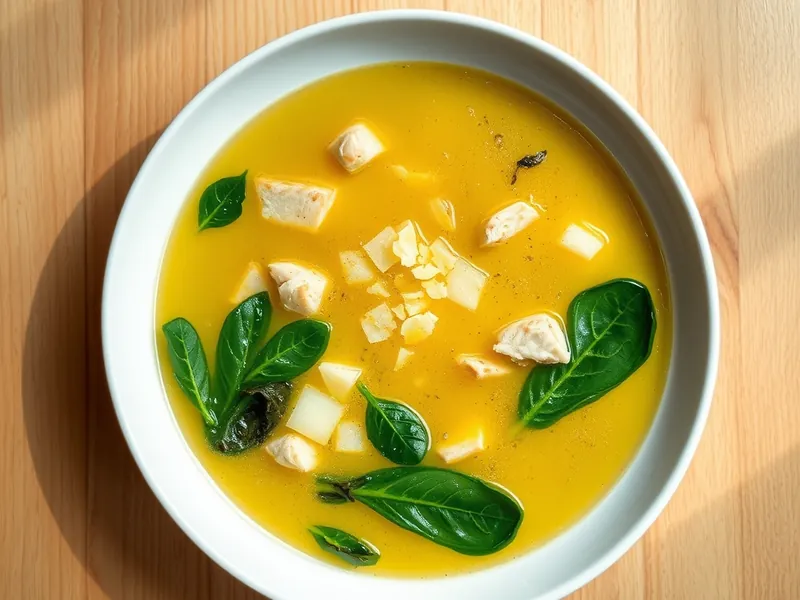

Страчателла: итальянский суп с яйцом и шпинатом
Куриный бульон с яично-сырными хлопьями, шпинатом и пармезаном
20 мин3 порц.266 ккал на порциюБ 33 · Ж 12 · У 6Итальянская кухня
Открыть в приложении: порции, таймеры, список покупок
Продукты на 3 порц.
- Куриное филе250 г
- Вода1000 мл
- Бульонный кубик1 шт
- Яйцо куриное3 шт
- Пармезан40 г
- Манная крупа1 ст. л.
- Шпинат100 г
- Мускатный орех1 щеп.
- Перец чёрный молотыйпо вкусу
- Лимон по желаниюпо вкусу
Как готовить
- Нарежьте куриное филе мелкими кубиками 1 см и опустите в кипящую воду с бульонным кубиком. Варите 10 минут на среднем огне, снимая пену.
- Пока варится курица, взбейте яйца с тёртым пармезаном, манкой, мускатным орехом и перцем.
- Добавьте в бульон шпинат и варите 1-2 минуты, пока листья не опадут и не потемнеют.
- Убавьте огонь до слабого и влейте яичную смесь тонкой струйкой, медленно помешивая вилкой. Через 1-2 минуты появятся мягкие хлопья.
- Снимите с огня, при желании добавьте пару капель лимонного сока и сразу разлейте по тарелкам.
Совет. Манка в яичной смеси не даёт хлопьям развалиться в муть. Свежий шпинат можно заменить замороженным, его кладут прямо из пакета.